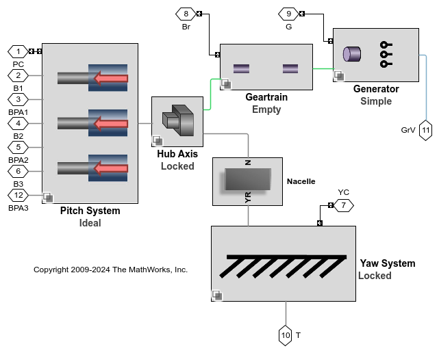

Table of Contents
- 1. Ideal Pitch Test
- 2. Hydraulic Pitch Test
- 3. Ideal Actuator Yaw Test
- 4. Ideal Motor Yaw Test
- 5. Servomotor Yaw Test
- 6. Ideal Pitch, Ideal Actuator Yaw Test
- 7. Hydraulic Pitch, Ideal Actuator Yaw Test
- 8. Ideal Pitch, Servomotor Yaw Test
- 9. Hydraulic Pitch, Servomotor Yaw Test
- 10. Ideal Pitch, Ideal Yaw, Geartrain, Lift and Drag
- 11. Ideal Pitch, Ideal Yaw, Geartrain, Segments
- 12. Hydraulic Pitch, Servomotor Yaw, Geartrain, Lift and Drag
- 13. Hydraulic Pitch, Servomotor Yaw, Geartrain, Segments
- 14. Ideal Pitch, Ideal Yaw, Geartrain, Generator, Lift and Drag
- 15. Ideal Pitch, Ideal Yaw, Geartrain, Generator, Segments
- 16. Hydraulic Pitch, Servomotor Yaw, Geartrain, Generator, Lift and Drag
- 17. Hydraulic Pitch, Servomotor Yaw, Geartrain, Generator, Segments
- 18. Ideal Pitch,Ideal Yaw, Geartrain, Lift Drag, High Wind Speed
- 19. Simulation Time Table
List of Figures
- 1.1. Pitch Actuator Force
- 1.2. Pitch Command and Angle (deg)
- 2.1. Pitch Actuator Force
- 2.2. Pitch Command and Angle (deg)
- 3.1. Nacelle Yaw
- 3.2. Yaw Actuator Torque
- 4.1. Nacelle Yaw
- 4.2. Yaw Actuator Torque
- 5.1. Nacelle Yaw
- 5.2. Yaw Actuator Torque
- 6.1. Pitch Actuator Force
- 6.2. Pitch Command and Angle (deg)
- 6.3. Nacelle Yaw
- 6.4. Yaw Actuator Torque
- 7.1. Pitch Actuator Force
- 7.2. Pitch Command and Angle (deg)
- 7.3. Nacelle Yaw
- 7.4. Yaw Actuator Torque
- 8.1. Pitch Actuator Force
- 8.2. Pitch Command and Angle (deg)
- 8.3. Nacelle Yaw
- 8.4. Yaw Actuator Torque
- 9.1. Pitch Actuator Force
- 9.2. Pitch Command and Angle (deg)
- 9.3. Nacelle Yaw
- 9.4. Yaw Actuator Torque
- 10.1. Nacelle Yaw
- 10.2. Pitch Command and Angle (deg)
- 10.3. Rotor Speed (RPM)
- 10.4. Wind
- 11.1. Nacelle Yaw
- 11.2. Pitch Command and Angle (deg)
- 11.3. Rotor Speed (RPM)
- 11.4. Wind
- 12.1. Nacelle Yaw
- 12.2. Pitch Command and Angle (deg)
- 12.3. Rotor Speed (RPM)
- 12.4. Wind
- 13.1. Nacelle Yaw
- 13.2. Pitch Command and Angle (deg)
- 13.3. Rotor Speed (RPM)
- 13.4. Wind
- 14.1. Nacelle Yaw
- 14.2. Pitch Command and Angle (deg)
- 14.3. Power
- 14.4. Rotor Speed (RPM)
- 14.5. Wind
- 15.1. Nacelle Yaw
- 15.2. Pitch Command and Angle (deg)
- 15.3. Power
- 15.4. Rotor Speed (RPM)
- 15.5. Wind
- 16.1. Nacelle Yaw
- 16.2. Pitch Command and Angle (deg)
- 16.3. Power
- 16.4. Rotor Speed (RPM)
- 16.5. Wind
- 17.1. Nacelle Yaw
- 17.2. Pitch Command and Angle (deg)
- 17.3. Power
- 17.4. Rotor Speed (RPM)
- 17.5. Wind
- 18.1. Nacelle Yaw
- 18.2. Pitch Command and Angle (deg)
- 18.3. Power
- 18.4. Rotor Speed (RPM)
- 18.5. Wind
List of Tables
- 19.1. Simulation Time
% CONFIGURE TURBINE WT_Configuration = 'I_Pitch Test'; Select_Turbine_Systems(WT_Configuration, WT_Configs);

% SAVE ELAPSED TIME WT_Results_RPT{end+1,1} = WT_Configuration; WT_Results_RPT{end,2} = Elapsed_Sim_Time; Simulation_Time = str2num(get_param(bdroot,'StopTime')); WT_Results_RPT{end,3} = 15; WT_Results_RPT{end,4} = 15/Elapsed_Sim_Time;
Pitch actuator has acceptable performance for step response.
% CONFIGURE TURBINE WT_Configuration = 'H_Pitch Test'; Select_Turbine_Systems(WT_Configuration, WT_Configs);
% SAVE ELAPSED TIME WT_Results_RPT{end+1,1} = WT_Configuration; WT_Results_RPT{end,2} = Elapsed_Sim_Time; Simulation_Time = str2num(get_param(bdroot,'StopTime')); WT_Results_RPT{end,3} = Simulation_Time; WT_Results_RPT{end,4} = Simulation_Time/Elapsed_Sim_Time;

Pitch actuator has acceptable performance for step response.
% CONFIGURE TURBINE WT_Configuration = 'IA_Yaw Test'; Select_Turbine_Systems(WT_Configuration, WT_Configs);
% SAVE ELAPSED TIME WT_Results_RPT{end+1,1} = WT_Configuration; WT_Results_RPT{end,2} = Elapsed_Sim_Time; Simulation_Time = str2num(get_param(bdroot,'StopTime')); WT_Results_RPT{end,3} = Simulation_Time; WT_Results_RPT{end,4} = Simulation_Time/Elapsed_Sim_Time;

% CONFIGURE TURBINE WT_Configuration = 'IM_Yaw Test'; Select_Turbine_Systems(WT_Configuration, WT_Configs);
% SAVE ELAPSED TIME WT_Results_RPT{end+1,1} = WT_Configuration; WT_Results_RPT{end,2} = Elapsed_Sim_Time; Simulation_Time = str2num(get_param(bdroot,'StopTime')); WT_Results_RPT{end,3} = Simulation_Time; WT_Results_RPT{end,4} = Simulation_Time/Elapsed_Sim_Time;
% CONFIGURE TURBINE WT_Configuration = 'S_Yaw Test'; Select_Turbine_Systems(WT_Configuration, WT_Configs);

% SAVE ELAPSED TIME WT_Results_RPT{end+1,1} = WT_Configuration; WT_Results_RPT{end,2} = Elapsed_Sim_Time; Simulation_Time = str2num(get_param(bdroot,'StopTime')); WT_Results_RPT{end,3} = Simulation_Time; WT_Results_RPT{end,4} = Simulation_Time/Elapsed_Sim_Time;

% CONFIGURE TURBINE WT_Configuration = 'I_Pitch IA_Yaw Test'; Select_Turbine_Systems(WT_Configuration, WT_Configs);
% SAVE ELAPSED TIME WT_Results_RPT{end+1,1} = WT_Configuration; WT_Results_RPT{end,2} = Elapsed_Sim_Time; Simulation_Time = str2num(get_param(bdroot,'StopTime')); WT_Results_RPT{end,3} = Simulation_Time; WT_Results_RPT{end,4} = Simulation_Time/Elapsed_Sim_Time;

% CONFIGURE TURBINE WT_Configuration = 'H_Pitch IA_Yaw Test'; Select_Turbine_Systems(WT_Configuration, WT_Configs);
% SAVE ELAPSED TIME WT_Results_RPT{end+1,1} = WT_Configuration; WT_Results_RPT{end,2} = Elapsed_Sim_Time; Simulation_Time = str2num(get_param(bdroot,'StopTime')); WT_Results_RPT{end,3} = Simulation_Time; WT_Results_RPT{end,4} = Simulation_Time/Elapsed_Sim_Time;


% CONFIGURE TURBINE WT_Configuration = 'I_Pitch S_Yaw Test'; Select_Turbine_Systems(WT_Configuration, WT_Configs);

% SAVE ELAPSED TIME WT_Results_RPT{end+1,1} = WT_Configuration; WT_Results_RPT{end,2} = Elapsed_Sim_Time; Simulation_Time = str2num(get_param(bdroot,'StopTime')); WT_Results_RPT{end,3} = Simulation_Time; WT_Results_RPT{end,4} = Simulation_Time/Elapsed_Sim_Time;


% CONFIGURE TURBINE WT_Configuration = 'H_Pitch S_Yaw Test'; Select_Turbine_Systems(WT_Configuration, WT_Configs);

% SAVE ELAPSED TIME WT_Results_RPT{end+1,1} = WT_Configuration; WT_Results_RPT{end,2} = Elapsed_Sim_Time; Simulation_Time = str2num(get_param(bdroot,'StopTime')); WT_Results_RPT{end,3} = Simulation_Time; WT_Results_RPT{end,4} = Simulation_Time/Elapsed_Sim_Time;

% CONFIGURE TURBINE WT_Configuration = 'I_Pitch IA_Yaw Ge Lift_Drag'; Select_Turbine_Systems(WT_Configuration, WT_Configs);

% SAVE ELAPSED TIME WT_Results_RPT{end+1,1} = WT_Configuration; WT_Results_RPT{end,2} = Elapsed_Sim_Time; Simulation_Time = str2num(get_param(bdroot,'StopTime')); WT_Results_RPT{end,3} = Simulation_Time; WT_Results_RPT{end,4} = Simulation_Time/Elapsed_Sim_Time;


% CONFIGURE TURBINE WT_Configuration = 'I_Pitch IA_Yaw Ge Segments'; Select_Turbine_Systems(WT_Configuration, WT_Configs);

% SAVE ELAPSED TIME WT_Results_RPT{end+1,1} = WT_Configuration; WT_Results_RPT{end,2} = Elapsed_Sim_Time; Simulation_Time = str2num(get_param(bdroot,'StopTime')); WT_Results_RPT{end,3} = Simulation_Time; WT_Results_RPT{end,4} = Simulation_Time/Elapsed_Sim_Time;


% CONFIGURE TURBINE WT_Configuration = 'H_Pitch S_Yaw Ge Lift_Drag'; Select_Turbine_Systems(WT_Configuration, WT_Configs);
% SAVE ELAPSED TIME WT_Results_RPT{end+1,1} = WT_Configuration; WT_Results_RPT{end,2} = Elapsed_Sim_Time; Simulation_Time = str2num(get_param(bdroot,'StopTime')); WT_Results_RPT{end,3} = Simulation_Time; WT_Results_RPT{end,4} = Simulation_Time/Elapsed_Sim_Time;

% CONFIGURE TURBINE WT_Configuration = 'H_Pitch S_Yaw Ge Segments'; Select_Turbine_Systems(WT_Configuration, WT_Configs);

% SAVE ELAPSED TIME WT_Results_RPT{end+1,1} = WT_Configuration; WT_Results_RPT{end,2} = Elapsed_Sim_Time; Simulation_Time = str2num(get_param(bdroot,'StopTime')); WT_Results_RPT{end,3} = Simulation_Time; WT_Results_RPT{end,4} = Simulation_Time/Elapsed_Sim_Time;


% CONFIGURE TURBINE WT_Configuration = 'I_Pitch IA_Yaw Ge Gn Lift_Drag'; Select_Turbine_Systems(WT_Configuration, WT_Configs);
% SAVE ELAPSED TIME WT_Results_RPT{end+1,1} = WT_Configuration; WT_Results_RPT{end,2} = Elapsed_Sim_Time; Simulation_Time = str2num(get_param(bdroot,'StopTime')); WT_Results_RPT{end,3} = Simulation_Time; WT_Results_RPT{end,4} = Simulation_Time/Elapsed_Sim_Time;


% CONFIGURE TURBINE WT_Configuration = 'I_Pitch IA_Yaw Ge Gn Segments'; Select_Turbine_Systems(WT_Configuration, WT_Configs);

% SAVE ELAPSED TIME WT_Results_RPT{end+1,1} = WT_Configuration; WT_Results_RPT{end,2} = Elapsed_Sim_Time; Simulation_Time = str2num(get_param(bdroot,'StopTime')); WT_Results_RPT{end,3} = Simulation_Time; WT_Results_RPT{end,4} = Simulation_Time/Elapsed_Sim_Time;


% CONFIGURE TURBINE WT_Configuration = 'H_Pitch S_Yaw Ge Gn Lift_Drag'; Select_Turbine_Systems(WT_Configuration, WT_Configs);
% SAVE ELAPSED TIME WT_Results_RPT{end+1,1} = WT_Configuration; WT_Results_RPT{end,2} = Elapsed_Sim_Time; Simulation_Time = str2num(get_param(bdroot,'StopTime')); WT_Results_RPT{end,3} = Simulation_Time; WT_Results_RPT{end,4} = Simulation_Time/Elapsed_Sim_Time;

% CONFIGURE TURBINE WT_Configuration = 'H_Pitch S_Yaw Ge Gn Segments'; Select_Turbine_Systems(WT_Configuration, WT_Configs);

% SAVE ELAPSED TIME WT_Results_RPT{end+1,1} = WT_Configuration; WT_Results_RPT{end,2} = Elapsed_Sim_Time; Simulation_Time = str2num(get_param(bdroot,'StopTime')); WT_Results_RPT{end,3} = Simulation_Time; WT_Results_RPT{end,4} = Simulation_Time/Elapsed_Sim_Time;


% CONFIGURE TURBINE WT_Configuration = 'I_Pitch IA_Yaw Ge Lift_Drag'; Select_Turbine_Systems(WT_Configuration, WT_Configs); set_param(expModel,'StopTime','60'); Wind_Turbine_SetWindData('High Wind Speed');

% SAVE ELAPSED TIME WT_Results_RPT{end+1,1} = WT_Configuration; WT_Results_RPT{end,2} = Elapsed_Sim_Time; Simulation_Time = str2num(get_param(bdroot,'StopTime')); WT_Results_RPT{end,3} = Simulation_Time; WT_Results_RPT{end,4} = Simulation_Time/Elapsed_Sim_Time;


Table 19.1. Simulation Time
| Configuration | Elapsed Time | Simulation Time | Sim Time/Elapsed Time |
|---|---|---|---|
| I_Pitch Test | 2.7624 | 15 | 5.4301 |
| H_Pitch Test | 3.8609 | 15 | 3.8851 |
| IA_Yaw Test | 2.4675 | 40 | 16.2105 |
| IM_Yaw Test | 3.8584 | 40 | 10.3671 |
| S_Yaw Test | 4.1904 | 40 | 9.5457 |
| I_Pitch IA_Yaw Test | 3.3270 | 40 | 12.0228 |
| H_Pitch IA_Yaw Test | 11.4068 | 40 | 3.5067 |
| I_Pitch S_Yaw Test | 5.4133 | 40 | 7.3893 |
| H_Pitch S_Yaw Test | 15.3032 | 40 | 2.6138 |
| I_Pitch IA_Yaw Ge Lift_Drag | 7.7794 | 80 | 10.2835 |
| I_Pitch IA_Yaw Ge Segments | 12.8860 | 80 | 6.2083 |
| H_Pitch S_Yaw Ge Lift_Drag | 18.5025 | 80 | 4.3237 |
| H_Pitch S_Yaw Ge Segments | 29.2582 | 80 | 2.7343 |
| I_Pitch IA_Yaw Ge Gn Lift_Drag | 11.0463 | 70 | 6.3370 |
| I_Pitch IA_Yaw Ge Gn Segments | 12.9273 | 70 | 5.4149 |
| H_Pitch S_Yaw Ge Gn Lift_Drag | 24.4362 | 70 | 2.8646 |
| H_Pitch S_Yaw Ge Gn Segments | 27.6492 | 70 | 2.5317 |
| I_Pitch IA_Yaw Ge Lift_Drag | 8.4889 | 60 | 7.0681 |